المصطلحات الاتجاهية ومستويات الجسم والوضعياتDirectional Terminology, Body Planes, Main Positions & Terms Related to Movements
نظري · م01 · 3.7 دقيقةأقسام المحاضرة (7)
الأهدافObjectives
- 1. Describe the directional terminologyوصف المصطلحات الاتجاهية.
- 2. Define the three body planesتعريف مستويات الجسم الثلاثة.
- 3. Describe the main positions in radiographyوصف الوضعيات الرئيسة في التصوير الشعاعي.
- 4. Film sizesأحجام الأفلام.
- 5. Terms related to movementsالمصطلحات المتعلقة بالحركات.
مصطلحات عامةGeneral Terms
المصطلحات الاتجاهيةDirectional Terminology
These terms are essential for describing the relative locations of different body structures.
هذه المصطلحات أساسية لوصف المواقع النسبية لتراكيب الجسم المختلفة بعضها بالنسبة لبعض.
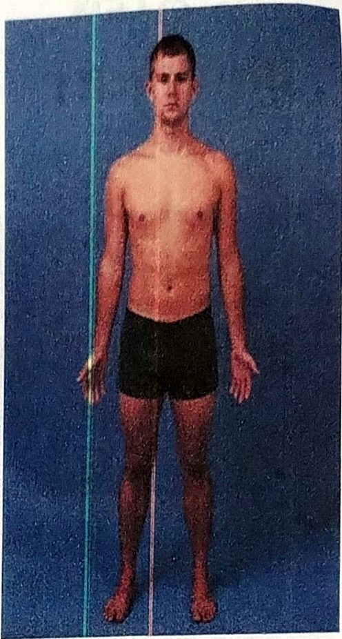
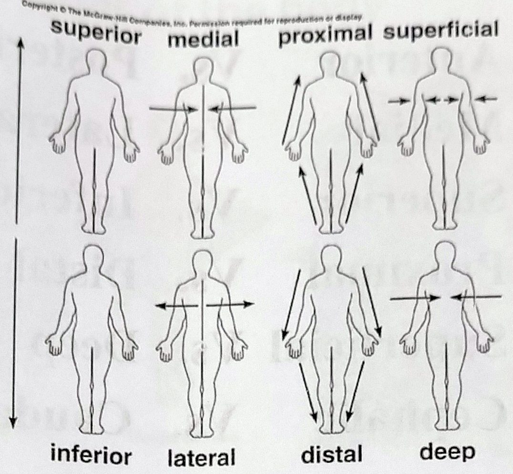
Cephalic CR angle (toward head) · Caudal CR angle (toward feet)
إمالة الشعاع المركزي باتجاه الرأس (Cephalic CR angle) · إمالة الشعاع المركزي باتجاه القدمين (Caudal CR angle)
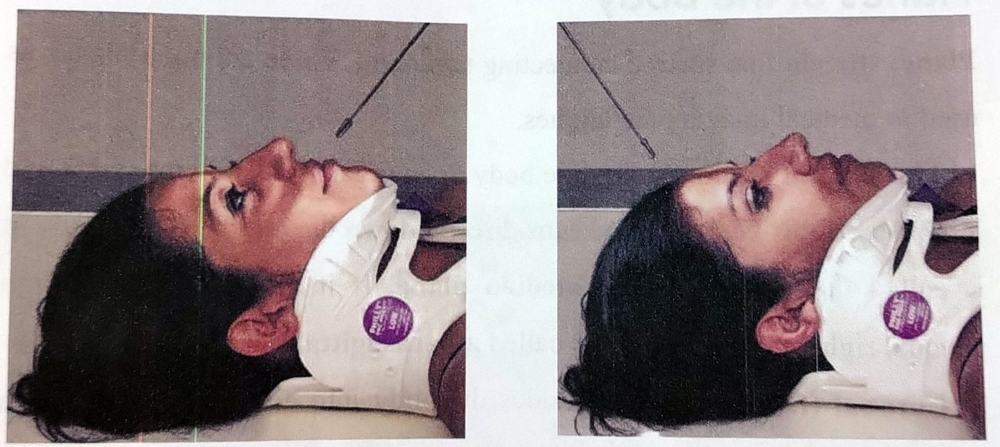
مراجعة: كل مصطلح وعكسهReview directional terminology
مستويات الجسمPlanes of the Body
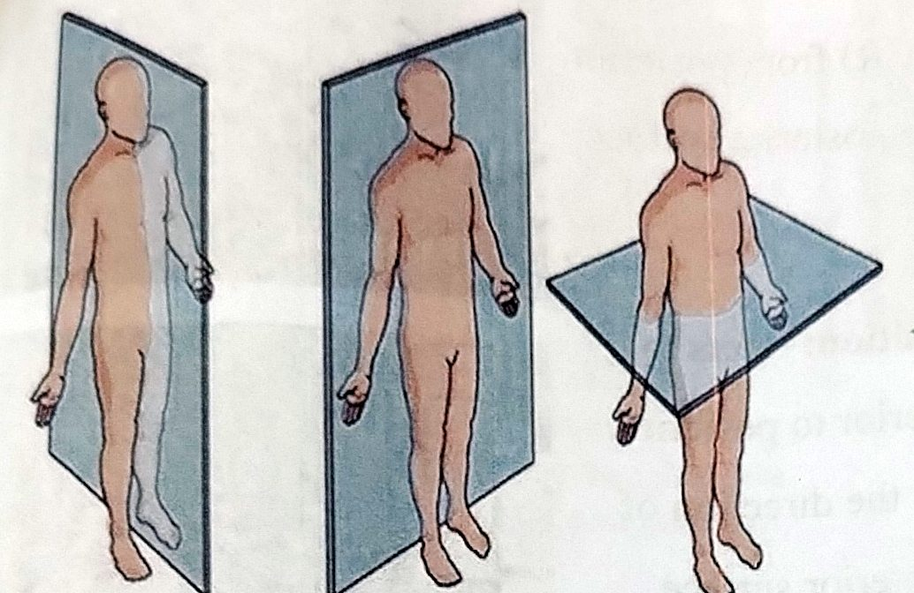
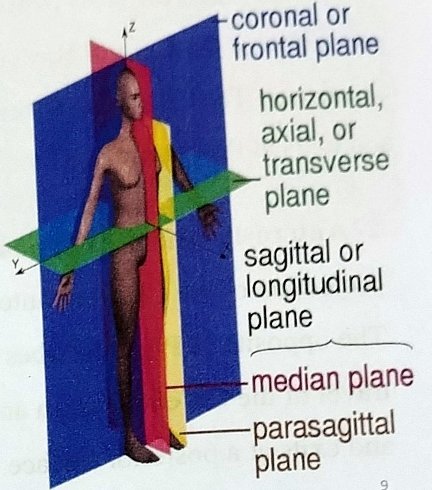
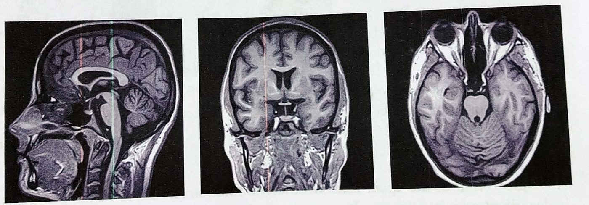
مصطلحات الإسقاط الشائعةCommon Projection Terms
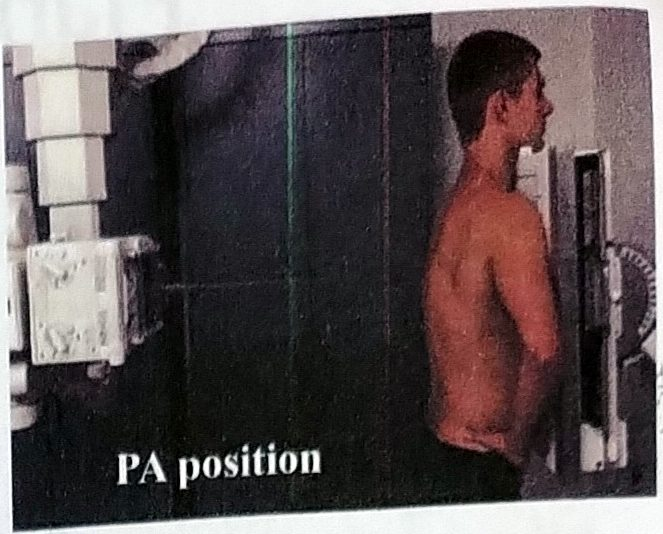
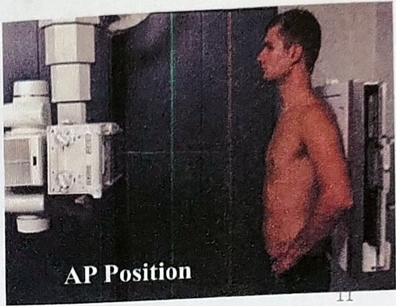
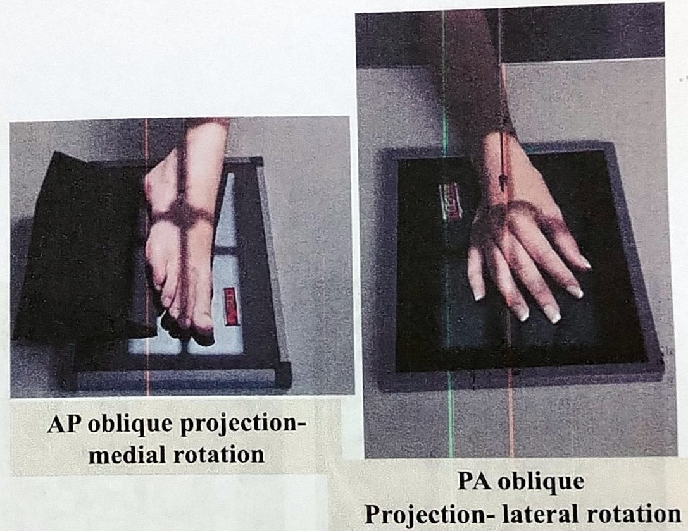
- • Right lateral position: is shown with the right side of the body closest to the image receptor (IR) in the erect position.وضع Right lateral (الجانبي الأيمن): يكون الجانب الأيمن من الجسم هو الأقرب إلى مستقبِل الصورة في وضع Erect (القائم).
- • Left lateral position: is opposite right lateral.وضع Left lateral (الجانبي الأيسر): عكس Right lateral.
- • mediolateralالإسقاط الإنسي الوحشي.
- • lateromedialالإسقاط الوحشي الإنسي.
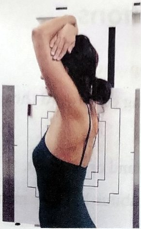
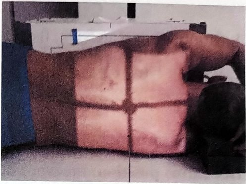
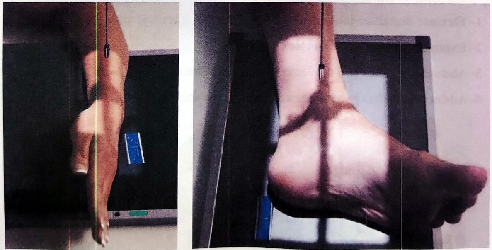
وضعيات الجسم العامةGeneral Body Positions
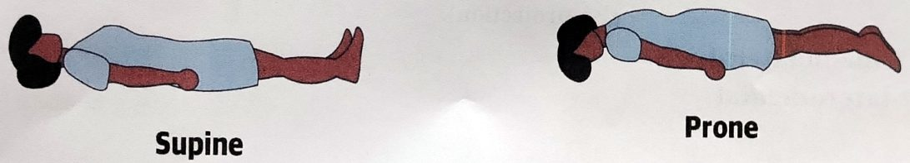
المصطلحات المتعلقة بالحركاتTerms Related to Movements
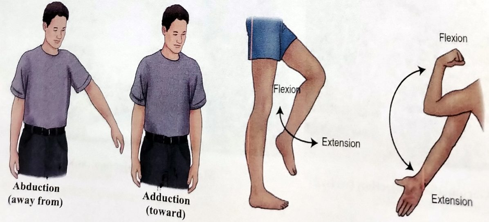
المحاضرة مسموعة
نص الأستاذ بالإنكليزي مثل الأصل · 3.7 دقيقة. اضغط أي جملة تسمعها، أو مصطلح منقّط تسمع لفظه ومعناه.
Objectivesالأهداف
Objectives
Describe the directional terminology
Define the three body planes
Describe the main positions in radiography
Film sizes
Terms related to movements
General Termsمصطلحات عامة
General Terms
An image of a patient's anatomic part(s), as produced by the action of x-rays on an image receptor. If the radiograph is produced with the use of traditional film-screen technology, the image is stored and displayed on film; if the radiograph is produced via digital technology, the image is viewed and stored with the use of computers.
The process and procedures of producing a radiograph.
In practice, the terms radiograph and x-ray film (or just film) are often used interchangeably.
The device that captures the radiographic image that exits the patient; refers to both film-screen cassettes and digital acquisition devices.
Refers to the center-most portion of the x-ray beam emitted from the x-ray tube; the portion of the x-ray beam that has the least divergence.
Directional Terminologyالمصطلحات الاتجاهية
Directional Terminology
These terms are essential for describing the relative locations of different body structures.
Cephalic CR angle (toward head) · Caudal CR angle (toward feet)
Review directional terminology
Anterior, Posterior
Medial, Lateral
Superior, Inferior
Proximal, Distal
Superficial, Deep
Cephalic, Caudal
Planes of the Bodyمستويات الجسم
Planes of the Body
straight line surface connecting two point. Three common planes as used in medical imaging techniques.
divides the body or an organ vertically into right and left sides. If this vertical plane runs directly down the middle of the body, it is called the midsagittal or median plane. If it divides the body into unequal right and left sides, it is called a parasagittal plane.
divides the body into an anterior part and a posterior part.
divides the body into superior and inferior part.
Common Projection Termsمصطلحات الإسقاط الشائعة
Common Projection Terms
refers to a projection of the Central Ray (CR) from posterior to anterior. The CR enters at the posterior surface and exits at the anterior surface.
refers to projection of the CR from anterior to posterior. The opposite of PA. Describes the direction of travel of the CR enters at an anterior surface and exits at a posterior surface.
An AP projection of the upper or lower limb that is rotated is called "oblique." This is not a true AP projection and must also include a qualifying term that indicates which way it is rotated, such as medial or lateral rotation. With an AP oblique projection, the CR enters the anterior surface and exits the posterior surface of the body or body part.
A PA projection of the upper limb with lateral rotation (from PA). This projection is described as a PA oblique. It must also include a qualifying term that indicates which way it is rotated. With a PA oblique projection, the CR enters the posterior surface and exits the anterior surface of the body or body part.
a true lateral position is always 90° or perpendicular.
Right lateral position: is shown with the right side of the body closest to the image receptor (IR) in the erect position.
Left lateral position: is opposite right lateral.
mediolateral
lateromedial
General Body Positionsوضعيات الجسم العامة
General Body Positions
Terms Related to Movementsالمصطلحات المتعلقة بالحركات
Terms Related to Movements
15 سؤال من نص المحاضرة، ويّا «ليش صح» بعد كل جواب.
ابدأ الاختباراضغط أي مصطلح منقّط تسمع لفظه ومعناه.
PDF ثنائي اللغة: نص الأستاذ + الترجمة + الخلاصة + الأسئلة · 1.8 MB
تحميل الملف